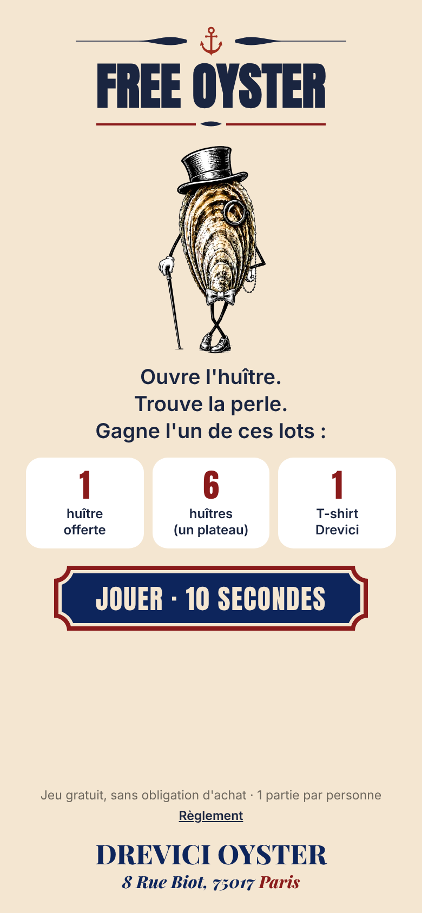
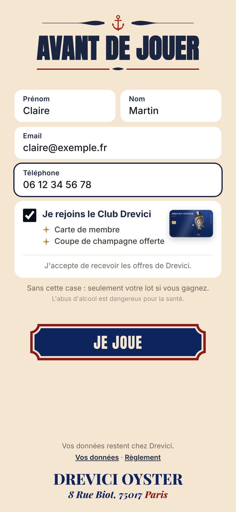
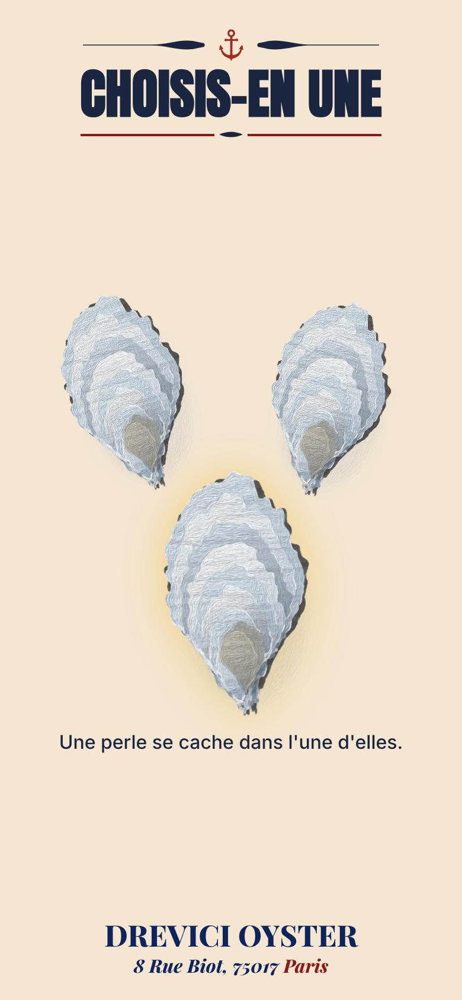
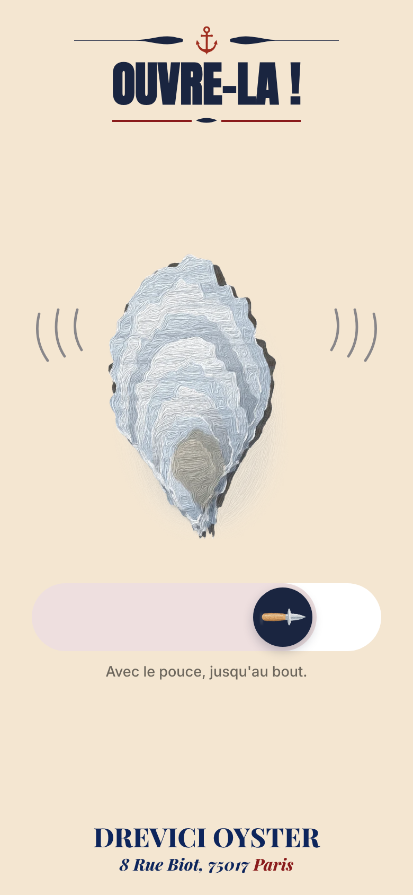
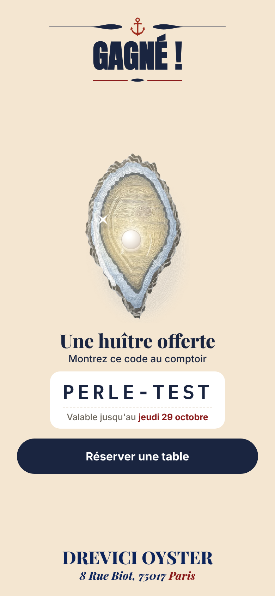
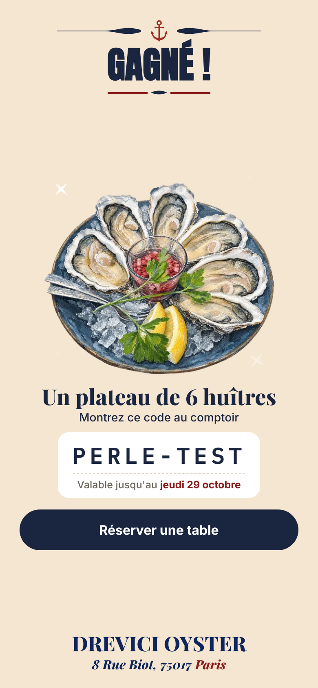
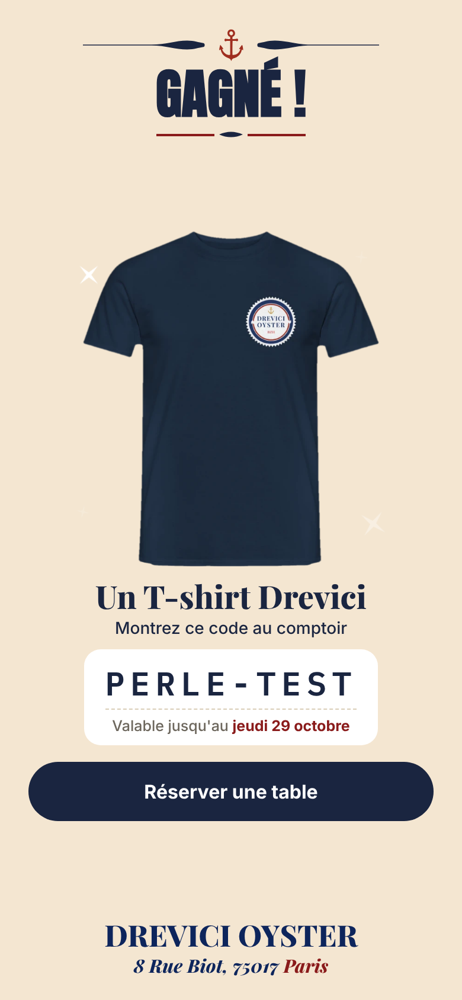
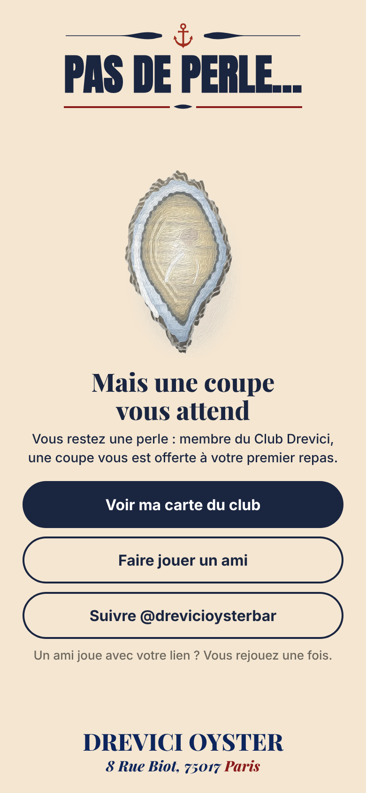
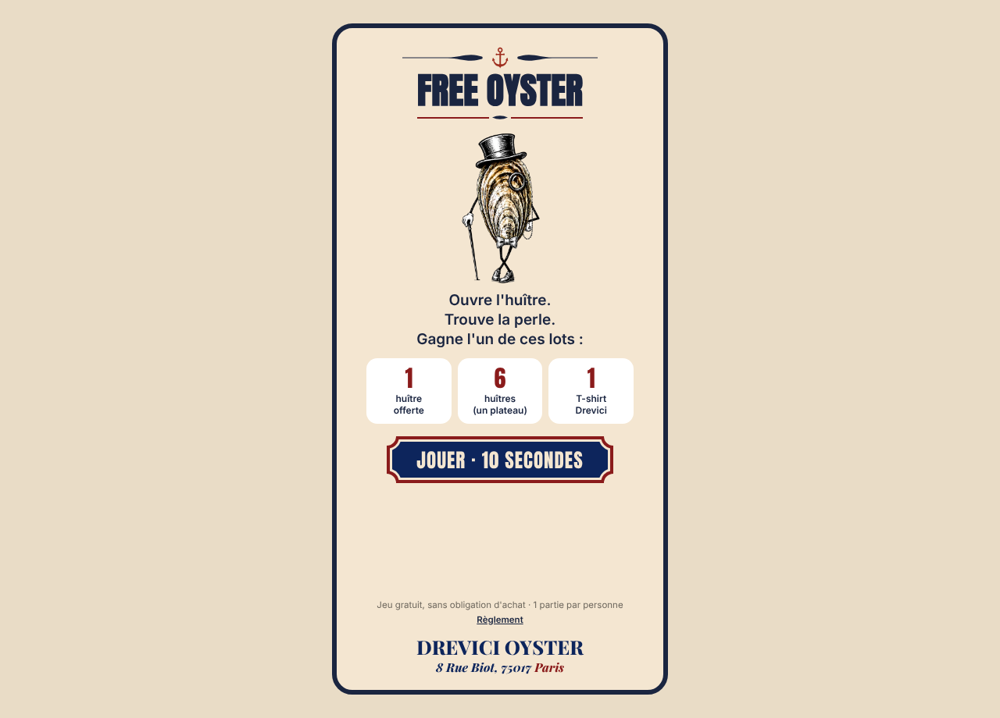

Le jeu derrière les posters « FREE OYSTER ». Une partie par personne, une partie bonus si un ami joue avec son lien. Chances : 1 huître offerte sur 10, 1 plateau de 6 huîtres sur 50, 1 T-shirt sur 100.









Le même jeu, centré dans un cadre bleu marine aux couleurs de Drevici.
Chaque joueur entre dans la base clients, avec le poster scanné. Les membres du club reçoivent leur carte par email. Les codes gagnants se valident en un clic dans l'espace restaurateur.